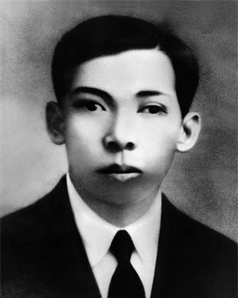

Trang chủ > Tiểu sử đồng chí Trần Phú
ĐỒNG CHÍ TRẦN PHÚ - TỔNG BÍ THƯ ĐẦU TIÊN CỦA ĐẢNG CỘNG SẢN VIỆT NAM
THÂN THẾ
Đồng chí Trần Phú sinh ngày 1 tháng 5 năm 1904 tại phủ Tuy An, tỉnh Phú Yên (nay thuộc xã huyện Tuy
An, tỉnh Phú Yên), nguyên quán của ông ở làng Đông Thái, xã An Đồng, tổng Việt Yên, (nay thuộc xã
Tùng Ảnh, huyện Đức Thọ, tỉnh Hà Tĩnh).
Cha Trần Phú là Trần Văn Phổ, từng đỗ Giải nguyên. Thời gian ông làm Giáo thụ Tuy An đã sinh ra Trần
Phú tại đây. Mẹ ông là bà Hoàng Thị Cát, người làng Tùng Anh, huyện Đức Thọ, tỉnh Hà Tĩnh. Trần Phú
là con thứ 7 trong gia đình.
Ngày 19/4/1908, khi đang là Tri huyện Đức Phổ (Quảng Ngãi), do không chịu được sự đè nén, áp bức,
nhục mạ của công sứ Pháp Dodey Besra và bất lực trước tình cảnh nhân dân đói khổ, lầm than, Trần Văn
Phổ đã thắt cổ tự sát tại công đường. Do nghèo khổ và buồn phiền, 2 năm sau đó, mẹ ông cũng qua đời
ngày 27/11/1910.
Trần Phú cùng với người em út là Trần Ngọc Danh từ Quảng Ngãi ra Quảng Trị sống với người chị gái
Trần Ngọc Quang và anh trai Trần Đường, về sau được một người dì ruột là cung nương Hoàng Thị Khương
mang về giao cho con trai mình là Thái Thường Tự Khanh Phạm Hoàng San và vợ là Phan Thị Yến (làm
việc ở Toà Khâm sứ Huế) nuôi dưỡng, và cho ăn học tại Trường tiểu học Pháp - Việt Đông Ba rồi Trường
Quốc học Huế. Tại Trường Quốc học Huế, ông được theo học cụ Võ Liêm Sơn một nhà giáo yêu nước.
Năm 1922, Trần Phú đỗ đầu kỳ thi Thành chung (học vị cao nhất theo hệ Pháp đào tạo tại Việt Nam lúc
bấy giờ) lúc 18 tuổi, rồi về dạy học tại trường Tiểu học Pháp - Việt Cao Xuân Dục ở Vinh (Nghệ An).
HOẠT ĐỘNG CÁCH MẠNG
Thời gian dạy học ở Vinh, vốn có ảnh hưởng tinh thần dân tộc của cha, Trần Phú có những tiếp xúc đầu
tiên với chủ nghĩa cộng sản. Năm 1925, ông cùng một số bạn bè như Lê Văn Huân, Trần Đình Thanh, Ngô
Đức Diễn, Tôn Quang Phiệt... thành lập Hội Phục Việt, sau đổi là Hội Hưng Nam, rồi lại đổi ra Việt
Nam Cách mạng Đảng.
Năm 1926, với bí danh Lý Quý, Trần Phú đại diện Việt Nam Cách mạng Đảng sang Quảng Châu (Trung Quốc)
bàn việc hợp nhất với Việt Nam Cách mạng Thanh niên. Tại Quảng Châu, ông tham gia một số lớp huấn
luyện về lý luận và chính trị, được kết nạp vào Cộng sản Đoàn, và được cử về nước hoạt động. Tháng
12 năm 1926, ông về đến Vinh, tham gia cải tổ Việt Nam Cách mạng Đảng theo đường lối và tổ chức của
Việt Nam thanh niên cách mạng.
Một thời gian sau, ông bị lộ, được tổ chức bố trí sang Quảng Châu để hoạt động với bí danh Lý Viết
Hoa. Mùa xuân năm 1927, Trần Phú được Nguyễn Ái Quốc cử sang học tại trường Đại học Đông Phương
(Liên Xô) với bí danh Likvey (Hhkbch). Tại đây, chi bộ những người Cộng sản Việt Nam được thành lập,
ông được chỉ định làm bí thư chi bộ này.
Năm 1928, Trần Phú là đại biểu dự Đại hội VI Quốc tế Cộng sản. Khi đó, tại quê nhà, ngày 11 tháng 10
năm 1929, ông bị tòa án Nam triều ở Nghệ An xử án vắng mặt cùng với một số đồng chí của mình.
Tấm biển trên căn hầm tại ngôi nhà số 90 phố Thợ Nhuộm, Hoàn Kiếm, Hà Nội ghi: Tại đây đồng chí Trần
Phú đã viết bản "Luận cương về cách mạng tư sản dân quyền" của Đảng
Tháng 4 năm 1930, Trần Phú về nước và được bổ sung vào Ban Chấp hành Trung ương Lâm thời của Đảng
(tháng 7), sau đó ít lâu vào Ban Thường vụ Trung ương. Ông được giao soạn thảo Luận cương Chính trị
về vấn đề cách mạng tư sản dân quyền ở Đông Dương.
Tháng 10 năm 1930, Hội nghị lần thứ nhất Ban Chấp hành Trung ương Đảng họp ở Hương Cảng (Trung Quốc)
đã thông qua bản Luận cương Chính trị và bầu Ban Chấp hành Trung ương chính thức, ông được bầu Tổng
Bí thư đầu tiên của Đảng.
Tháng 3 năm 1931, với bí danh Anh Năm, Trần Phú chủ trì Hội nghị Trung ương lần thứ 2 tại Sài Gòn
bàn việc chấn chỉnh Đảng sau đợt khủng bố của thực dân Pháp. Hội nghị khẳng định: "Đảng [Cộng sản
Việt Nam] là đảng tiền phong của giai cấp vô sản, Đảng chiến đấu cho lợi ích sống còn của dân tộc,
cho quyền lợi các giai cấp bị bóc lột, bị áp bức, nhưng không phải là đảng của Công Nông. Kiên quyết
chống tả khuynh, chống hữu khuynh". Hội nghị đã vạch ra nghị quyết về nhiệm vụ hiện tại của Đảng,
nghị quyết về tổ chức của Đảng, nghị quyết về cổ động tuyên truyền. Tại hội nghị này, một quyết định
về "Tổ chức ra cộng sản thanh niên Đoàn là một nhiệm vụ thâu phục một bộ phận quan trọng của vô sản
giai cấp, là một vấn đề cần kíp của Đảng phải giải quyết". Đây được xem là tiền đề để hình thành
Đoàn Thanh niên Cộng sản Hồ Chí Minh về sau này. Theo Sophie Quinn- Judge, tác giả cuốn "Hồ Chí
Minh: Những năm chưa biết đến" (Hochiminh: The missing years), mối quan hệ giữa Ban Chấp hành Trung
ương với Hồ Chí Minh lúc đó đã xuống dốc rất nhiều. Hồ Chí Minh lúc đó bị chỉ trích vì người ta bắt
đầu xem ông là một nhà cải cách theo xu hướng quốc gia.
"HÃY GIỮ VỮNG CHÍ KHÍ CHIẾN ĐẤU"
Ngay sau Hội nghị, do sự phản bội của Ngô Đức Trì, ngày 19 tháng 4 năm 1931, Trần Phú bị thực dân
Pháp bắt tại nhà số 66 đường Champagne (đường Lý Chính Thắng hiện nay), Sài Gòn.
Biết ông là cán bộ cao cấp, chính quyền thực dân tìm cách dụ dỗ và tra tấn để khai thác thông tin.
Nhưng với chí khí kiên cường, ông không bị khuất phục, dù bị đày ải nhiều lần. Ngày 6 tháng 9 năm
1931, ông qua đời tại Nhà thương Chợ Quán ở tuổi 27 với lời nhắn nhủ bạn bè "Hãy giữ vững chí khí
chiến đấu".
Anh chị em tù chính trị ở khám lớn Sài Gòn năm 1931 đã làm thơ:
Trần Phú anh ơi đã thác rồi
Thác mà như thế đẹp gương soi
Bao phen sóng gió đâu sờn dạ
Mấy trận đòn tra chẳng hở môi
Giọt máu anh hùng giờ tơi tả
Trái tim vô sản vẫn không rời
Tuy anh đã thác gương còn sáng
Thác được như anh sáng suốt đời
Sau khi ông qua đời, người thân ông vào Sài Gòn, tìm cách đưa thi hài ông ra chôn cất tại nghĩa
trang Chợ Quán Sài Gòn (nay là thuộc khu vực công viên Lê Thị Riêng). Năm 1998, người cháu ruột của
ông đã tìm cách tìm lại ngôi mộ của ông thông qua ký ức được kể lại và ngoại cảm. Ngày 4 tháng 1 năm
1999, phần mộ được cho rằng của ông đã được phát hiện. Ngày 12 tháng 1 năm 1999, hài cốt của Trần
Phú được di dời về an táng tại quê hương Đức Thọ, Hà Tĩnh. Mộ của ông được đặt trên ngọn đồi cao
thuộc xã Tùng Ảnh, phía trước mộ là hàng chữ "Hãy giữ vững chí khí chiến đấu".